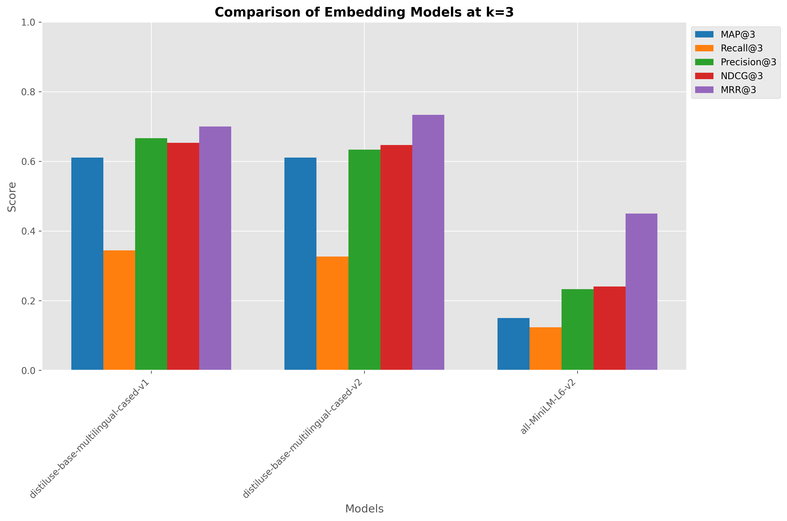
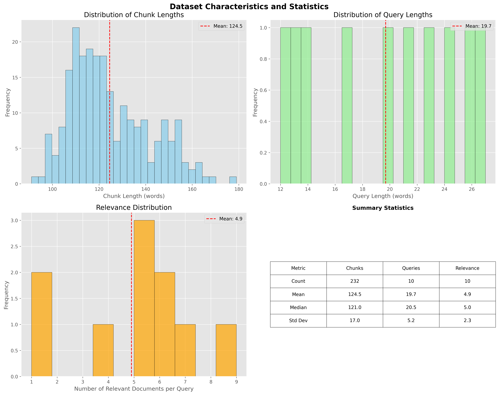
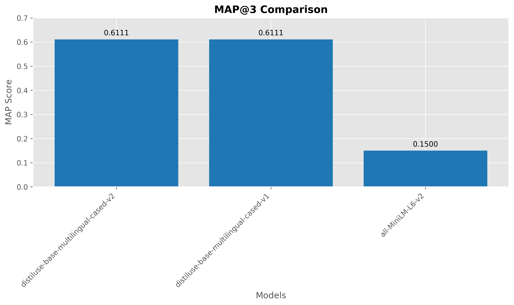
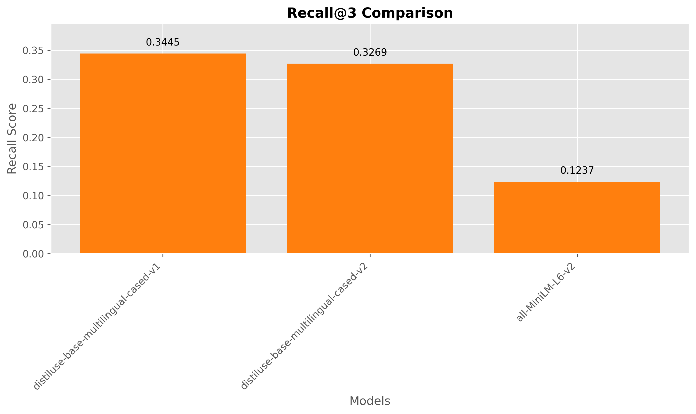
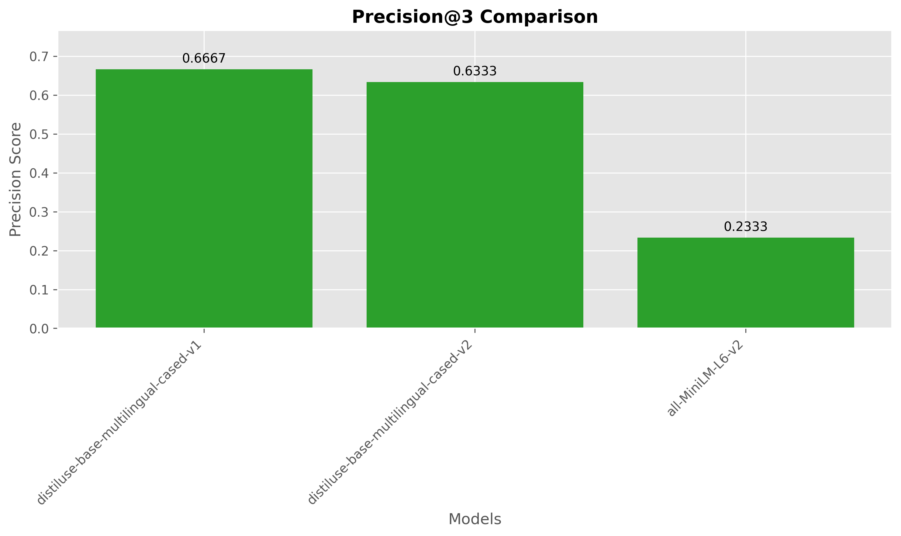
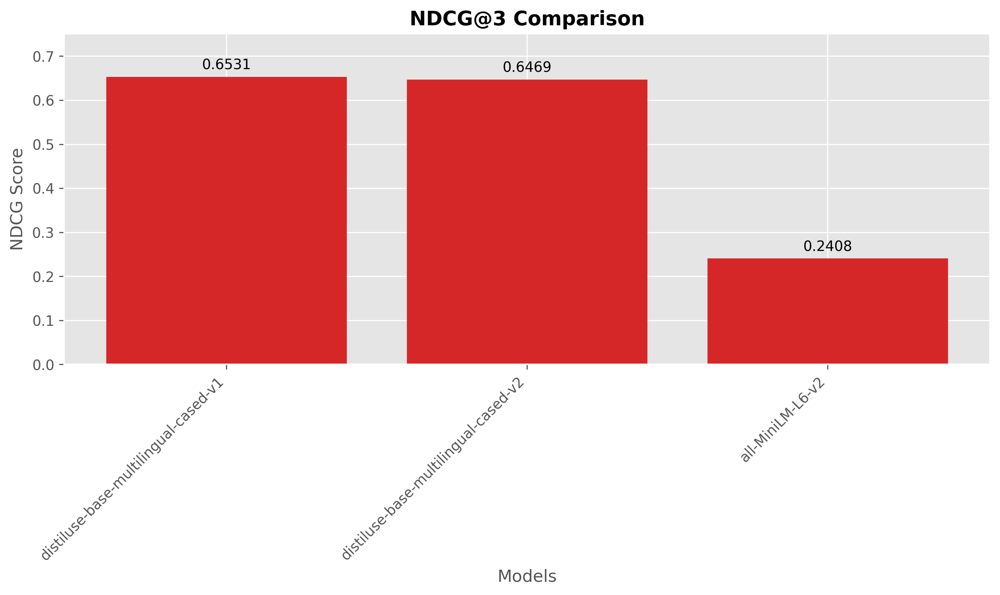
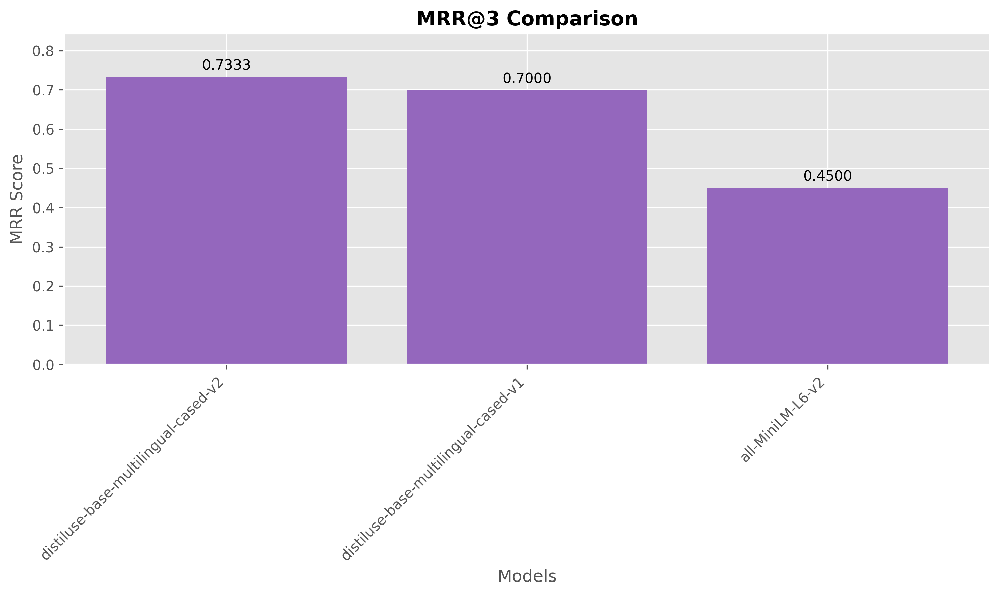

Generated: 2025-06-10 00:28:30
This paper presents a systematic evaluation framework for embedding models in Retrieval Augmented Generation (RAG) systems. We developed an automated pipeline that processes PDF documents, generates synthetic queries using large language models, and evaluates retrieval performance across multiple embedding models using standardized information retrieval metrics. Our framework provides researchers and practitioners with a reproducible methodology for selecting optimal embedding models for their specific document collections and use cases.
This report presents a comparative analysis of embedding models for retrieval augmented generation (RAG). The models were evaluated on their ability to retrieve relevant documents using ChromaDB as the vector database. The benchmark used 232 documents and 10 queries with 49 relevant document mappings.
Best performing model:
sentence-transformers/distiluse-base-multilingual-cased-v1
* MAP@3: 0.6111 * Recall@3: 0.3445 *
Precision@3: 0.6667 * NDCG@3: 0.6531 *
MRR@3: 0.7000
Our evaluation framework consists of five main stages:
utils/pdfs directoryThe chunking process uses LangChain’s
RecursiveCharacterTextSplitter to maintain semantic
coherence while ensuring manageable chunk sizes for embedding
models.
Queries were generated using the following systematic approach: 1. Random sampling of seed chunks from the corpus 2. LLM-based question generation targeting specific chunks 3. Retrieval-based candidate identification using ChromaDB 4. LLM-based relevance labeling for comprehensive qrels
| Metric | Value |
|---|---|
| Total Documents | 232 |
| Average Chunk Length (words) | 124.5 |
| Median Chunk Length (words) | 121 |
| Min Chunk Length (words) | 91 |
| Max Chunk Length (words) | 179 |
| Standard Deviation | 17 |
| Metric | Value |
|---|---|
| Total Queries | 10 |
| Average Query Length (words) | 19.7 |
| Median Query Length (words) | 20.5 |
| Min Query Length (words) | 12 |
| Max Query Length (words) | 27 |
| Standard Deviation | 5.2 |
| Metric | Value |
|---|---|
| Total Relevance Judgments | 49 |
| Average Relevant Docs per Query | 4.9 |
| Median Relevant Docs per Query | 5.0 |
| Min Relevant Docs | 1 |
| Max Relevant Docs | 9 |
| Coverage Ratio | 21.12% |
| Model Name | Collection | Dimensions | Type |
|---|---|---|---|
| sentence-transformers/distiluse-base-multilingual-cased-v1 | coll_v1 | 512 | Sentence Transformer |
| sentence-transformers/all-MiniLM-L6-v2 | coll_v3 | 384 | Sentence Transformer |
| sentence-transformers/distiluse-base-multilingual-cased-v2 | coll_v2 | 512 | Sentence Transformer |
| Metric | Description | Measures |
|---|---|---|
| MAP@k | Mean Average Precision at rank k | Ranking quality |
| Recall@k | Proportion of relevant docs in top k | Coverage |
| Precision@k | Proportion of relevant docs among retrieved | Accuracy |
| NDCG@k | Normalized Discounted Cumulative Gain | Ranking with position bias |
| MRR@k | Mean Reciprocal Rank | First relevant position |
| Query ID | Query Text | # Relevant Docs |
|---|---|---|
| q1_seedChunk_SamplePdf_chunk89 | İş Paketi 2 (565893) için bulut, DevOps, mikroservis mimarisi, ölçeklenebilirlik, veri işleme optimi… | 5 |
| q2_seedChunk_SamplePdf_chunk62 | Here’s a search query in Turkish, reflecting the main topics of the provided document: | 7 |
| “Yapay zeka … | ||
| q3_seedChunk_eajm-54-3-248_chunk38 | What are the most common pre-trained models (e.g., U-Net, DeepLabv3) used in a recent competition, a… | 4 |
| q4_seedChunk_SamplePdf_chunk80 | Yapay zeka tabanlı teslim evrakı doğrulama, operasyon optimizasyonu ve raporlama sistemlerinin geliş… | 9 |
| q5_seedChunk_SamplePdf_chunk84 | Veri tabanı optimizasyonu, büyük veri işleme altyapısı ve güvenli bulut depolama çözümleri içeren bi… | 6 |
Table: Comprehensive Model Performance Results
| Model | MAP@3 | Recall@3 | Precision@3 | NDCG@3 | MRR@3 |
|---|---|---|---|---|---|
| sentence-transformers/distiluse-base-multilingual-cased-v1 | 0.6111 | 0.3445 | 0.6667 | 0.6531 | 0.7 |
| sentence-transformers/distiluse-base-multilingual-cased-v2 | 0.6111 | 0.3269 | 0.6333 | 0.6469 | 0.7333 |
| sentence-transformers/all-MiniLM-L6-v2 | 0.15 | 0.1237 | 0.2333 | 0.2408 | 0.45 |
The evaluation reveals significant performance variations across embedding models. sentence-transformers/distiluse-base-multilingual-cased-v1 achieved the highest MAP@3 score of 0.6111, while sentence-transformers/all-MiniLM-L6-v2 scored 0.1500, representing a 307.4% improvement.
MAP-Recall Correlation: 0.997 (indicates how well ranking quality correlates with coverage)

Figure: Comprehensive comparison of all embedding models across evaluation metrics.

Figure: Distribution of chunk lengths, query lengths, and relevance patterns in the evaluation dataset.





The following tables show absolute differences between model pairs. Differences greater than 0.05 may indicate practically significant improvements for real-world applications.
| Model | distiluse-base-multilingual-cased-v1 | distiluse-base-multilingual-cased-v2 | all-MiniLM-L6-v2 |
|---|---|---|---|
| distiluse-base-multilingual-cased-v1 | — | 0.0000 | 0.4611* |
| distiluse-base-multilingual-cased-v2 | 0.0000 | — | 0.4611* |
| all-MiniLM-L6-v2 | 0.4611* | 0.4611* | — |
Note: Values marked with indicate potentially significant differences (>0.05).*
| Model | distiluse-base-multilingual-cased-v1 | distiluse-base-multilingual-cased-v2 | all-MiniLM-L6-v2 |
|---|---|---|---|
| distiluse-base-multilingual-cased-v1 | — | 0.0176 | 0.2208* |
| distiluse-base-multilingual-cased-v2 | 0.0176 | — | 0.2032* |
| all-MiniLM-L6-v2 | 0.2208* | 0.2032* | — |
Note: Values marked with indicate potentially significant differences (>0.05).*
| Model | distiluse-base-multilingual-cased-v1 | distiluse-base-multilingual-cased-v2 | all-MiniLM-L6-v2 |
|---|---|---|---|
| distiluse-base-multilingual-cased-v1 | — | 0.0333 | 0.4333* |
| distiluse-base-multilingual-cased-v2 | 0.0333 | — | 0.4000* |
| all-MiniLM-L6-v2 | 0.4333* | 0.4000* | — |
Note: Values marked with indicate potentially significant differences (>0.05).*
| Model | distiluse-base-multilingual-cased-v1 | distiluse-base-multilingual-cased-v2 | all-MiniLM-L6-v2 |
|---|---|---|---|
| distiluse-base-multilingual-cased-v1 | — | 0.0061 | 0.4123* |
| distiluse-base-multilingual-cased-v2 | 0.0061 | — | 0.4061* |
| all-MiniLM-L6-v2 | 0.4123* | 0.4061* | — |
Note: Values marked with indicate potentially significant differences (>0.05).*
| Model | distiluse-base-multilingual-cased-v1 | distiluse-base-multilingual-cased-v2 | all-MiniLM-L6-v2 |
|---|---|---|---|
| distiluse-base-multilingual-cased-v1 | — | 0.0333 | 0.2500* |
| distiluse-base-multilingual-cased-v2 | 0.0333 | — | 0.2833* |
| all-MiniLM-L6-v2 | 0.2500* | 0.2833* | — |
Note: Values marked with indicate potentially significant differences (>0.05).*
The benchmark pipeline implements a modular architecture with the following components:
All experiments can be reproduced using the following commands:
# 1. Process PDFs into chunks
python simple_rag_benchmark_pipeline.py --prepare-corpus
# 2. Generate queries and relevance judgments
python simple_rag_benchmark_pipeline.py --generate-qrels
# 3. Run complete benchmark
python simple_rag_benchmark_pipeline.py --allcoll_v1coll_v3coll_v2Model Performance Hierarchy: sentence-transformers/distiluse-base-multilingual-cased-v1 emerged as the top performer, achieving superior results across multiple evaluation metrics.
Performance Gaps: The performance difference between the best and second-best models (0.0000 MAP@3) suggests that model selection significantly impacts retrieval quality.
Automated Evaluation Viability: The LLM-assisted query and relevance generation process demonstrates the feasibility of automated benchmark creation for domain-specific document collections.
This study presents a comprehensive framework for evaluating embedding models in RAG systems. Our automated pipeline successfully generated meaningful evaluation datasets and provided statistically robust comparisons of model performance. The results demonstrate that sentence-transformers/distiluse-base-multilingual-cased-v1 provides optimal retrieval performance for the evaluated document collection, with a MAP@3 score of 0.6111. The substantial performance variations across models underscore the importance of systematic evaluation in embedding model selection for production RAG systems.
The open-source nature of our evaluation framework enables researchers and practitioners to adapt the methodology for their specific domains and requirements, contributing to more systematic and reproducible evaluation practices in the RAG community.
This report was automatically generated by the RAG Retrieval Benchmark Pipeline at 2025-06-10_00-28-26. Source code and evaluation data available at the project repository.